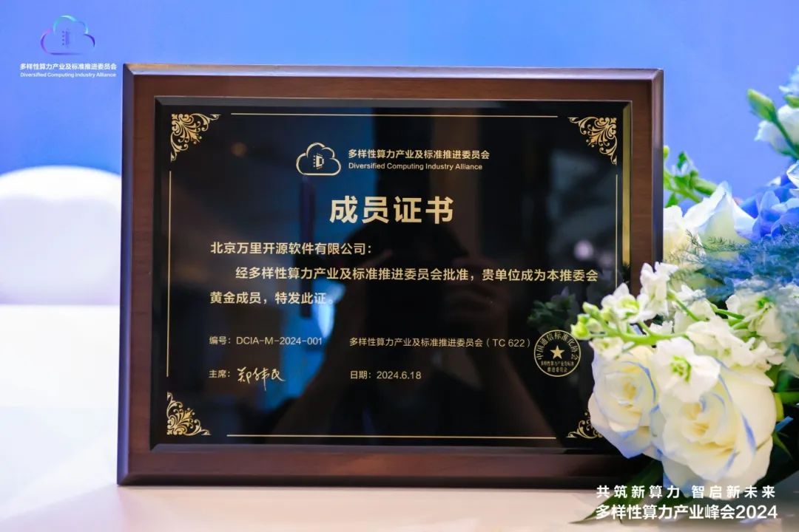
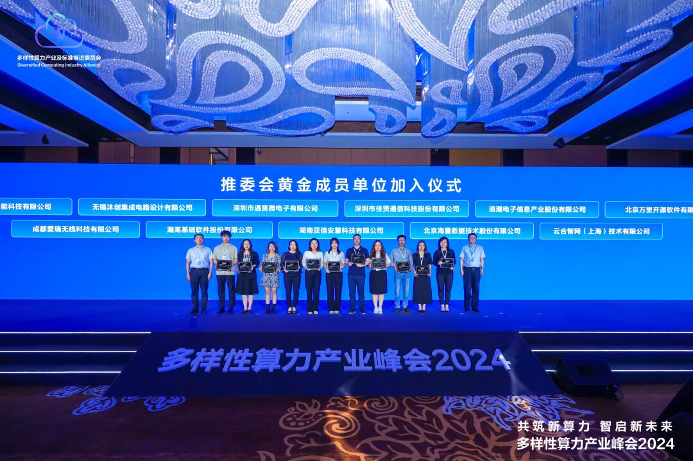
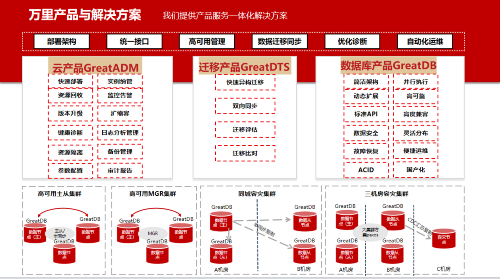

展会丨共筑算力基础设施底座 万里数据库亮相多样性算力产业峰会
6月18日，以“共筑新算力，智启新未来”为主题的多样性算力产业峰会2024在北京成功举办。本次峰会由中国通信标准化协会多样性算力产业及标准推进委员会(CCSA TC622，以下简称“推委会”)主办，中国移动、华为等企业联合承办，中国联通、中国电信支持承办。万里数据库受邀出席峰会，正式加入多样性算力产业及标准推进委员会，成为黄金成员单位。


峰会期间，推委会宣布成立智算工作组、安全工作组，发布Arm产业生态成果案例、北京全向智感OISA协同创新平台、算力基础设施质量评估模型(CQM2)等一系列多样性算力产业生态成果。同时，大会围绕大模型时代智算基础设施、Arm生态构建等热点技术，分享产业趋势和最佳实践，推动多样性算力与行业应用的深度融合，为人工智能和千行百业数字化转型注入强劲动力。
一站式数据库创新解决方案 构建多样性算力基础设施底座
新质生产力以数字化、网络化、智能化等新技术为支撑，而多样性算力则是新质生产力发展的关键技术推动力之一。多样性算力产业及标准推进委员会目前已吸引超百家伙伴加入，成员单位涵盖运营商、整机、部件、芯片IP、设备商、基础软件厂商和科研院所。此次万里数据库入选推委会成员单位，表明了公司作为基础软件厂商，在构建多样性算力基础设施底座的技术成果与应用实践获得认可。
作为聚焦数据库技术研发超过20年的国产数据库厂商，万里数据库积极推动运营商等行业在内的算力技术创新和应用，聚焦企业数字化转型，打造以安全数据库为核心的一站式国产数据库产品与解决方案，赋能千行百业，构建多样性算力基础设施底座。

目前，万里数据库已服务中国移动集团总部及下辖近20个省市分公司的核心、重点业务系统数字化转型和数据库国产替代工作，为中国移动构建5G时代的数字智能运营商提供安全稳定、专业高效、易用便捷的全方位数据库技术支撑与服务体系保障，释放数算融合创新动能，以基础软件坚实力量赋能中国移动算力网络高质量发展。
随着大模型技术的飞速发展和算力基础设施建设加速，诸多产业发展多样性算力已成为大势所趋。
未来，万里数据库将持续深耕数据库技术领域，强化原始创新能力，以万里安全数据库软件GreatDB为核心，持续为用户提供专业优质的一站式数据库产品与解决方案，积极投入到多样性算力产业升级和创新发展事业中，共建开放、多元、普惠的计算产业生态，为中国计算产业发展贡献万里力量。